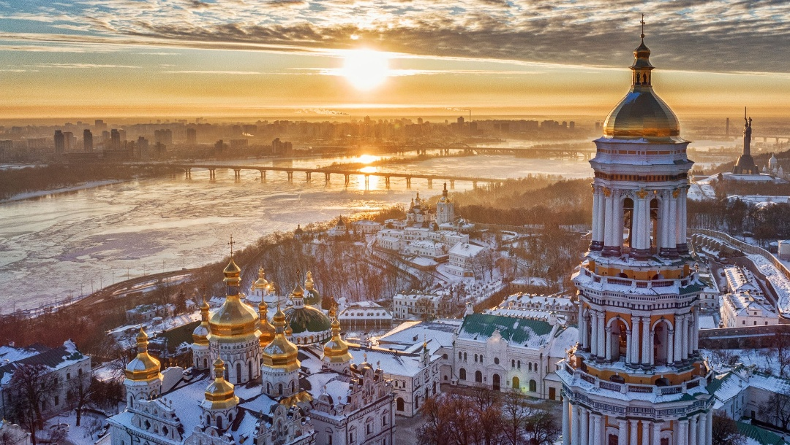
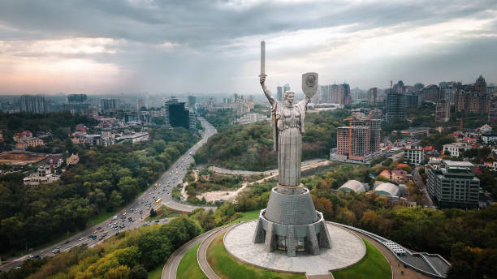

die Hauptstadt der Ukraine, ist eine der ältesten Städte Osteuropas und ein kulturelles sowie
politisches Zentrum des Landes. Gelegen am majestätischen Fluss Dnepr, bietet Kiew eine einzigartige Mischung aus historischem Erbe und modernem Leben.
Die Stadt blickt auf eine lange und bewegte Geschichte zurück. Gegründet im 5. Jahrhundert, wurde Kiew im 9. Jahrhundert zum Zentrum der Kiewer Rus, eines der mächtigsten Staaten in Europa
während des Mittelalters. Diese Epoche brachte der Stadt großen Wohlstand und kulturelle Blüte, die sich in der Errichtung prachtvoller Kirchen und Klöster manifestierte. Zwei herausragende
Beispiele sind das Kiewer Höhlenkloster und die Sophienkathedrale, die heute zum UNESCO-Weltkulturerbe gehören.
Nach der Zerstörung durch die Mongolen im 13. Jahrhundert erlebte Kiew wechselvolle Zeiten unter der Herrschaft verschiedener Mächte, darunter das Großfürstentum Litauen, das Königreich Polen und das
Russische Zarenreich. Jede dieser Perioden hat ihre Spuren in der Architektur und Kultur der Stadt hinterlassen.
Im 20. Jahrhundert war Kiew ein bedeutender Schauplatz während des Zweiten Weltkriegs und erlebte schwere Zerstörungen. In der Sowjetzeit entwickelte sich die Stadt zu einem wichtigen industriellen und wissenschaftlichen
Zentrum. Die Unabhängigkeit der Ukraine im Jahr 1991 markierte einen neuen Abschnitt in der Geschichte Kiews. Seitdem hat sich die Stadt zu einem Symbol der nationalen Identität und der demokratischen Bestrebungen des Landes entwickelt.
Heute ist Kiew nicht nur das politische Herz der Ukraine, sondern auch ein bedeutendes Wirtschafts- und Innovationszentrum. Die dynamische Kulturszene, das pulsierende Nachtleben und die vielfältige Gastronomie machen die Stadt zu einem
attraktiven Ziel für Touristen und Geschäftsreisende gleichermaßen.
Obwohl die jüngste Geschichte Kiews von politischen und sozialen Veränderungen geprägt ist, bleibt die Stadt ein Symbol der Resilienz und der kulturellen Vielfalt der Ukraine. Besucher können hier eine lebendige Mischung aus Tradition und Moderne erleben.
Danke für Lesen!

Zur Sofia Infos) gehen ...